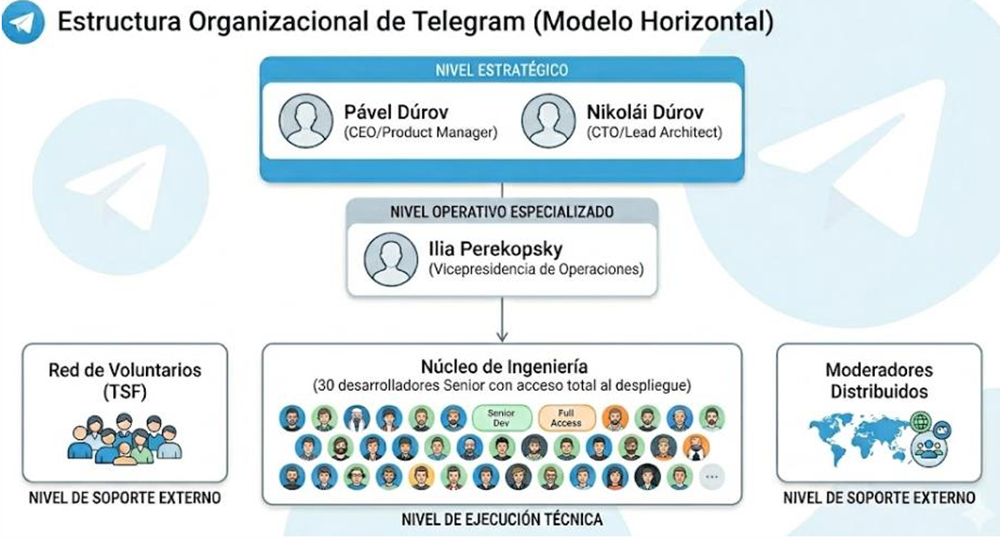
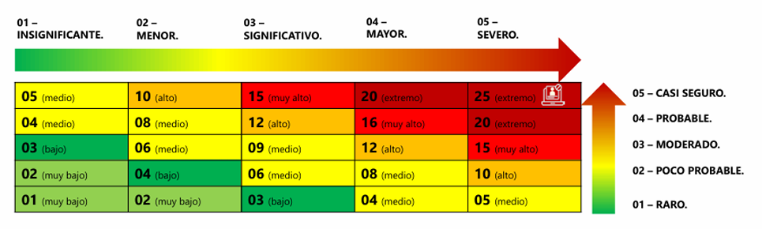

Proyecto Final (PR03)
Implementación Teórica de la ISO/IEC 27001:2022 en la Infraestructura de Telegram.
En la era actual, donde la privacidad digital es constantemente asediada por actores estatales y amenazas persistentes avanzadas (APT), Telegram se ha consolidado como un baluarte de la libertad de expresión, superando los 1000 millones de usuarios activos globales. Desarrollada por los hermanos Pável y Nikolái Dúrov bajo un protocolo propietario (MTProto), su promesa de valor se fundamenta en un ecosistema ultra-rápido, descentralizado y fuertemente encriptado.
Sin embargo, la complejidad de mantener una red distribuida con un equipo núcleo de apenas 30 ingenieros exige más que solo brillantez técnica; requiere un marco de gobierno auditable. El presente proyecto estructura de forma integral las cláusulas de la Norma Internacional ISO/IEC 27001:2022 aplicadas al ecosistema de Telegram. A través de este análisis, justificaremos cómo la norma no entorpece su estructura horizontal, sino que la blinda contra amenazas internas, facilita el cumplimiento legal transfronterizo (Compliance) y garantiza la preservación de la Tríada CIA (Confidencialidad, Integridad y Disponibilidad) en el procesamiento de sus activos más críticos.
Alcance, Resumen y Estructura Organizacional
Misión y Visión: Garantizar el derecho a la privacidad y la libre comunicación global mediante tecnología de vanguardia, accesible y gratuita. Convertirse en la infraestructura de comunicación más segura y eficiente del mundo, redefiniendo los estándares de libertad digital y autonomía del usuario.
Telegram opera bajo una filosofía de minimalismo radical, funcionando más como una startup tecnológica de élite que como una corporación multinacional. Carece de burocracia tradicional y mandos intermedios.
- Nivel Estratégico: Pável Dúrov (CEO/Product Manager) lidera la visión y diseño, y Nikolái Dúrov (CTO/Lead Architect) encabeza la arquitectura técnica y el cifrado.
- Nivel Operativo Especializado: Vicepresidencia de Operaciones (Ilia Perekopsky) gestionando monetización (Premium), asociaciones y finanzas.
- Nivel de Ejecución Técnica (Núcleo de Ingeniería): Un grupo selecto de aprox. 30 desarrolladores Senior con acceso total al despliegue, encargados del código base, la infraestructura de servidores y la seguridad del protocolo.
- Nivel de Soporte Externo: La Fuerza de Soporte de Telegram (TSF), una red global de voluntarios y moderadores distribuidos.

Normas Aplicables y Vocabulario (ISO 27000)
A diferencia de otras normas enfocadas en seguridad puramente informática, la familia 27000 adopta un enfoque holístico basado en la gestión del riesgo. La norma central seleccionada es la ISO/IEC 27001:2022, ya que establece los requisitos formales para un Sistema de Gestión de Seguridad de la Información (SGSI) bajo el ciclo de mejora continua PHVA.
El Anexo A (Controles de Seguridad): Reestructurado en 93 controles divididos en 4 temáticas: Organizacionales (Cláusula 5), De Personas (Cláusula 6, vital para el reclutamiento hermético de Telegram), Físicos (Cláusula 7) y Tecnológicos (Cláusula 8, cifrado y desarrollo seguro).
- 1. Proporcionalidad y Adaptabilidad: Marcos como COBIT destruirían la agilidad de los 30 ingenieros. ISO 27001 dictamina *qué* cumplir, no *cómo*, permitiendo mantener la estructura plana y veloz.
- 2. Blindaje contra Amenaza Interna: El eslabón más débil es el factor humano. Los controles de Personas obligan al principio de mínimo privilegio, mitigando impactos si un ingeniero es coaccionado o sobornado.
- 3. Armonización Legal (Compliance): Procesa datos globales sujetos a leyes contradictorias (GDPR vs Leyes locales). La ISO 27001 otorga una "presunción de cumplimiento" internacional.
- 4. Enfoque Basado en Riesgos: Obliga a Telegram a justificar inversiones técnicas basándose en análisis matemáticos y no en meras intuiciones de producto del CEO.
| Término ISO | Definición Estándar |
|---|---|
| Información (2.37) / Activo (2.4) | Datos que tienen valor para la organización. Algo valioso que requiere protección. |
| Seguridad de la Información (2.28) | Preservación de la confidencialidad, integridad y disponibilidad (Tríada CIA). |
| SGSI (2.30) | Parte del sistema de gestión general basada en un enfoque de riesgo empresarial. |
| Riesgo (2.61) / Amenaza (2.77) | Efecto de la incertidumbre sobre los objetivos / Causa potencial de un incidente no deseado. |
| Control (2.16) | Medida que modifica el riesgo. |
| Confidencialidad (2.12) | Propiedad de que la información no se ponga a disposición de no autorizados. |
| Integridad (2.40) | Propiedad de exactitud y completitud. |
| Disponibilidad (2.9) | Propiedad de ser accesible y utilizable a petición de una entidad autorizada. |
Contexto Organizacional y Gestión de Activos
Dado el enfoque en el procesamiento de información por un equipo mínimo, las áreas centrales del SGSI son:
- A. Ciclo de Vida de Desarrollo (SDLC) Seguro: Controles A.8.25 y A.8.28. Pruebas SAST/DAST automatizadas antes de liberar código.
- B. Gestión de Infraestructura Distribuida: Controles A.8.22 y A.8.14. Segregación de redes y continuidad operativa si cae un nodo.
- C. Criptografía y Gestión de Claves: Control A.8.24. Gobernanza estricta sobre la generación y destrucción de claves de MTProto.
- "No utilizamos tus datos para mostrarte anuncios" → Alineado con la Clasificación de la Información.
- "Almacenamos los datos necesarios para que el servicio funcione" → Alineado con Minimización de Datos.
- Conflicto Potencial: Entrega de datos bajo órdenes judiciales de terrorismo. Bajo ISO 27001, debe estar estrictamente procedimentado (Relación con Autoridades).
Inventario de Activos Primarios y de Soporte (Cláusula 8)
Activo Primario: El Dato del Usuario (Mensajería, Metadatos de contacto y multimedia).
| Activos Internos Críticos | Política Funcional (Control) |
|---|---|
| Código MTProto & Claves Privadas | Peer Review obligatorio. Fragmentación Jurisdiccional (partición de llaves). |
| Bases de Datos & Nodos Cloud | Minimización de datos (registros efímeros). Aislamiento estanco de nodos. |
| Talento Humano (Ingenieros) | Dispersión geográfica, redundancia técnica para evitar punto único de falla (Bus Factor). |
| Documentación & Logs CI/CD | Cifrado de DRP. Logs inalterables (Write-Once). Aislamiento del entorno de compilación. |
| Redes Internas & Blockchain | Autenticación MFA de hardware (tokens físicos). Consenso distribuido. |
| Activos Externos (Proveedores) | Política Funcional (Control) |
|---|---|
| Datacenters y App Stores | Servidores Bare Metal con Cifrado SED. Diversificación (APKs directos). |
| Endpoints e ISPs | Autodestrucción de caché local. Uso de MTProto Proxies / Domain Fronting. |
| Pasarelas de Pago y SMS (OTP) | Tokenización financiera total. Caducidad ultra-corta de OTPs. |
| DNS, CDN y Voluntarios TSF | Uso de DNSSEC y Registry Lock. Exclusión de contenido privado en CDN. Acceso compartimentado. |
Liderazgo, Compromiso y Políticas (Cláusula 5)
En la estructura horizontal de Telegram, el cumplimiento de la Cláusula 5 recae directamente en los fundadores, Pável y Nikolái Dúrov. Para que el SGSI sea efectivo, la alta dirección debe demostrar liderazgo no solo financiando la plataforma de manera independiente, sino garantizando que los objetivos de seguridad de la información sean compatibles con la dirección estratégica de la privacidad absoluta. Su liderazgo se evidencia en la negativa firme ante presiones gubernamentales para instalar "puertas traseras" (backdoors), protegiendo la integridad del cifrado end-to-end.
Telegram debe mantener una Política de Seguridad de la Información documentada que sea apropiada a su propósito. Dicha política establece el compromiso de cumplir con los requisitos aplicables relacionados a la soberanía de datos y a la mejora continua del protocolo MTProto. Dado el nivel técnico del equipo, la política es pragmática: cero confianza (Zero Trust) en los perímetros internos, cifrado en reposo y tránsito obligatorio, y la máxima "no poseer la clave completa significa no poder entregarla".
A pesar de no contar con una burocracia jerárquica, la norma exige la asignación de responsabilidades sobre el SGSI. Dentro del núcleo de 30 ingenieros, se establecen Comités de Revisión de Código (Peer Reviewers) temporales y rotativos. A Nikolái Dúrov se le asigna el rol implícito de Arquitecto en Jefe de Seguridad Criptográfica, quien tiene la autoridad final sobre las fusiones (merges) al núcleo de MTProto. Los voluntarios de la TSF tienen roles estrictamente limitados (acceso a metadatos anonimizados) bajo el principio de necesidad de saber.
Planificación y Evaluación de Riesgos (Cláusula 6)
Telegram opera en un "limbo" legal estratégico. Su evaluación de riesgos debe considerar las siguientes normativas internacionales:
- GDPR (Unión Europea): Obligatorio por procesamiento de ciudadanos europeos. ISO 27001 demuestra su cumplimiento.
- Ley Federal EAU (No. 2 de 2019): Sede operativa en Dubái, regulando protección de datos y telecomunicaciones locales.
- Islas Vírgenes Británicas: Jurisdicción de la entidad legal principal corporativa.

Tratamiento de Riesgos Identificados
I. Riesgo Extremo (16-25)
Claves Criptográficas (20): Pérdida de confidencialidad total. Mitigación: Fragmentación jurisdiccional, uso de HSM.
Nodos Cloud (20): Acceso no autorizado. Mitigación: Aislamiento estanco y cifrado de disco.
Ataques DDoS (25): Caída sistémica. Mitigación: Filtrado Capa 4 y Anycast redundante.
MTProto Source Code (15-20): Ing. Inversa. Mitigación: Auditorías matemáticas externas.
II. Riesgo Muy Alto (10-15)
Pasarelas SMS OTP (15): Secuestro SS7. Mitigación: Priorizar OTP interna, rotación ISP.
Proveedores DNS (15): Redirección de tráfico. Mitigación: DNSSEC y Registry Lock obligatorio.
Entornos CI/CD (15): Inyección de malware. Mitigación: Firma multi-etapa, compilación aislada.
III. Riesgo Medio/Bajo (04-09)
App Stores (09): Censura y eliminación. Mitigación: APK directos y Web App autónoma.
Bloqueo ISPs (08): Inspección de paquetes. Mitigación: Ofuscación y MTProto Proxy.
Endpoints Usuario (05): Robo físico del dispositivo. Mitigación: Auto-destrucción, vaciado de caché.
Soporte y Operación (Cláusulas 7 y 8)
Para mitigar el riesgo de inyección de código malicioso en las aplicaciones cliente (Reproducible Builds), la operación técnica de Telegram debe seguir el ciclo Deming:
- PLAN: Definir especificaciones técnicas para entornos de compilación "limpios" y efímeros. Sincronizar el repositorio público con el envío a tiendas.
- DO: Publicar repositorios, generar binarios en entornos aislados y aplicar firmas de código digitales a los artefactos.
- CHECK: Realizar pruebas de reproducibilidad (bit a bit) entre binarios internos y tiendas. Auditar reportes de terceros.
- ACT: Corregir desviaciones en caso de discrepancias de hash, ajustar manuales de compilación y mejorar el CI/CD.
Evidencia de Concienciación (Soporte y Competencia)
CARTA DE CONFORMIDAD Y NOTIFICACIÓN (PSI)
1. GESTIÓN DE COMPETENCIA Y RECURSOS
Se ha determinado que la apertura de puertos de red no esenciales no forma parte de las herramientas requeridas para la operación diaria. El entorno de infraestructura del colaborador ha sido configurado bajo el estándar de "Menor Privilegio".
2. CONCIENCIACIÓN DEL SGSI Y PSI
El colaborador declara ser consciente de los lineamientos del Sistema de Gestión de Seguridad de la Información (SGSI). Entiende que el cierre de puertos lógicos es una medida de protección de activos valiosos, reduciendo la superficie de ataque ante intrusiones. Se aceptan los bloqueos preventivos de la Política de Seguridad de la Información (PSI) vigente.
3. PROTOCOLO DE COMUNICACIÓN
Cualquier necesidad operativa que requiera excepción en el firewall deberá enviarse vía ticket justificado al equipo de Seguridad Informática (InfoSec), quienes evaluarán la competencia y necesidad real para una autorización temporal.
4. DECLARACIÓN DE CONFORMIDAD
"Entiendo que estas medidas no son una limitante a mi trabajo, sino una responsabilidad compartida para proteger la infraestructura global de Telegram."
Evaluación del Desempeño y Auditoría (Cláusula 9)
Telegram requiere métricas precisas para evaluar la eficacia de los controles de su SGSI. Dada su naturaleza descentralizada, el monitoreo se enfoca en la resiliencia de la red y la integridad de los datos. Se analizan de forma continua las peticiones anómalas (rate limiting) hacia las pasarelas de SMS (previendo secuestros SS7), los registros de tiempo de inactividad de los servidores Cloud y la validación matemática periódica de la red Blockchain integrada. Las métricas de DNSSEC y los logs de la VPN interna bajo sistemas Zero Trust son alertados en tiempo real ante cualquier discrepancia.
Debido a lo reducido del equipo (30 ingenieros), las auditorías internas operativas se basan en un sistema de revisión cruzada obligatoria (Peer Review). Ningún ingeniero puede auditar su propio código para despliegue a producción. Adicionalmente, el núcleo de protocolo MTProto es sometido a auditorías matemáticas especializadas por firmas externas independientes de alto nivel criptográfico, asegurando que no se generen puertas traseras inadvertidas ni degradación en la entropía del cifrado a medida que evolucionan las funcionalidades.
Los resultados del monitoreo y las auditorías son presentados directamente a Pável y Nikolái Dúrov. Esta revisión evalúa si las inversiones en infraestructura distribuida y redundancia Anycast están cumpliendo los objetivos estratégicos de mantener la plataforma invulnerable a ataques estatales (censura, DDoS). Las decisiones correctivas o de asignación de recursos se toman con extrema velocidad gracias a la ausencia de juntas directivas convencionales.
Mejora Continua y Gestión de Incidentes (Cláusula 10)
Riesgo Afectado: Código Fuente del Protocolo MTProto (Riesgo Extremo - 15).
En abril de 2026, un investigador externo reportó mediante Bug Bounty una vulnerabilidad crítica de desbordamiento de búfer en el componente de cifrado de MTProto 2.0, permitiendo deducir fragmentos de memoria efímera mediante ingeniería inversa. Se reveló que esta falla se introdujo en una actualización menor reciente que omitió la auditoría criptográfica constante estipulada en la política del SGSI.
En un tiempo de respuesta de 45 minutos: 1) Aislamiento del repositorio restringiendo accesos de escritura; 2) El Núcleo Senior desarrolló un parche criptográfico de emergencia (hotfix); 3) Se ejecutó una auditoría externa retrospectiva urgente (Fast-Track) en un entorno aislado para certificar el restablecimiento de la integridad antes del despliegue global a clientes.
El análisis reveló una falla en el pipeline de control del entorno de desarrollo seguro. Una regla técnica mandatoria —que impedía la fusión de ramas (merge) sin el certificado digital de la firma auditora externa— fue desactivada manualmente durante un mantenimiento previo y no se reactivó por falta de un sistema de verificación automatizada.
- Endurecimiento de Repositorios: Reglas de rama inmutables que exigen automáticamente la firma criptográfica del Arquitecto en Jefe y el hash de aprobación externo. Nadie puede evadir la restricción.
- Monitoreo Bot Automático: Integración de un bot de auditoría que escanea el pipeline cada 60 minutos. Si detecta desactivación de reglas, revoca accesos preventivamente.
Auditoría de seguimiento 30 días después: Los logs inalterables confirmaron 8 fusiones (merges) al núcleo MTProto. El 100% exigió correctamente la doble firma de seguridad. El bot de monitoreo operó sin caídas. Conclusión: La acción correctiva se evalúa como Eficaz, cerrando de forma robusta la brecha en el ciclo SDLC del protocolo.